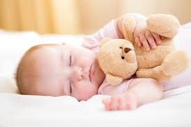

After 2 months, babies sleep 15 to 16 hours a day. But those hours are sporadic, and
they usually aren’t ready to sleep through the night. This is especially true for breastfed
babies, who generally wake up to eat every three hours or so. By the time your baby is three years old,
his/her's nervous system matures and their stomach can accommodate more milk
or any other food. These changes allow your baby to sleep for a stretch of six or seven hours
at a time, which translates into a good night sleep for you. Sometimes, babies might cry for a few seconds
and go back to sleep. At around 4 months, you may be enjoying a full night sleep.

At this age, babaies can
sleep seven to eight hours in a row. Add in two naps, and your baby would be sleeping a total
of 14 to 16 hours a day. During the fifth month, in order to encourage your baby to get into
a regular night time sleep rhythm, establish a bedtime routine. Start with a warm bath, followed by a few minutes of
gentle rocking with a song and story, and their eyes are sure to start drooping.
Most babies are sleeping six to eight hours at a stretch by six months.
Now that your baby can roll over independently, don’t be alarmed if you put them to sleep on their back and they wake up on their tummy.
By 10 months, your baby may be down to a single one-hour nap during the day. but there's nothing to worry about if they are still taking 2 naps. If you’re going to skip a nap, it’s better to skip the morning one. An after-lunch nap will help baby stay awake through the afternoon and avoid pre-bedtime crankiness. Your baby should make up for the lost nap
by sleeping for an extra hour or two at night, and sleeping through the night.